Question 1
(a) The flow of thermal energy through a conductor due to a temperature difference between two faces is described by an equation of the form, dQ d =
in which dQ d is the rate of heat flow, is the cross sectional area of the conductor, and is the temperature gradient along the line of heat flow. The thermal conduction properties of the medium are given by the coefficient of thermal conductivity, .
i) A similar flow through a conductor may be ascribed to conduction of electricity. Write down an equation of the same form for electrical conduction through a material, stating what the corresponding term is in each equation. Comment on the presence of the minus sign.
ii) In an example in which two cylindrical conductors of heat energy with the same cross sectional areas and similar lengths are placed end to end in series, so that the thermal energy flows through each in turn, what is the equivalent thermal conductivity of the series combination of conductors, , in terms of and ? (No heat is lost through the sides of the conductors).
(b) A circuit is set up with the current flowing radially through a uniform disc of conducting material of resistivity, , and thickness, . Current enters a centre metal core of radius which has a very high conductivity and flows out of the rim of the disc, which has radius , and has a ribbon of highly conducting metal around it. In terms of the linear dimensions and the resistivity, obtain an expression for the resistance through the disc.
Figure 1.1 Resistive disc with a current flowing radially from centre to edge, from the conducting metal centre core to the conducting metal rim.
Conducting rim
(c) Physicists often have to explain effects seen in nature for which there may be a number of contributing explanations. Observation is a key skill of the physicist, being able to see what is in front of him and spot the important relevant features.
In Figures 1.2 and 1.3 below, water was seen flowing down a road from the constant source of a small stream at the side of the road. The smooth flow of the stream breaks up further up the road. The water flows down the uniform slope of the road towards the observer. State what you can observe in the photographs and comment on them from the point of view of a physicist. You are not required to do any calculations or explain all the physics of this complicated situation.
Figure 1.3 Flowing water breaking up on a shallow slope.
Figure 1.2 Flowing water on a shallow slope showing how the flow becomes uniform again when it spreads out.
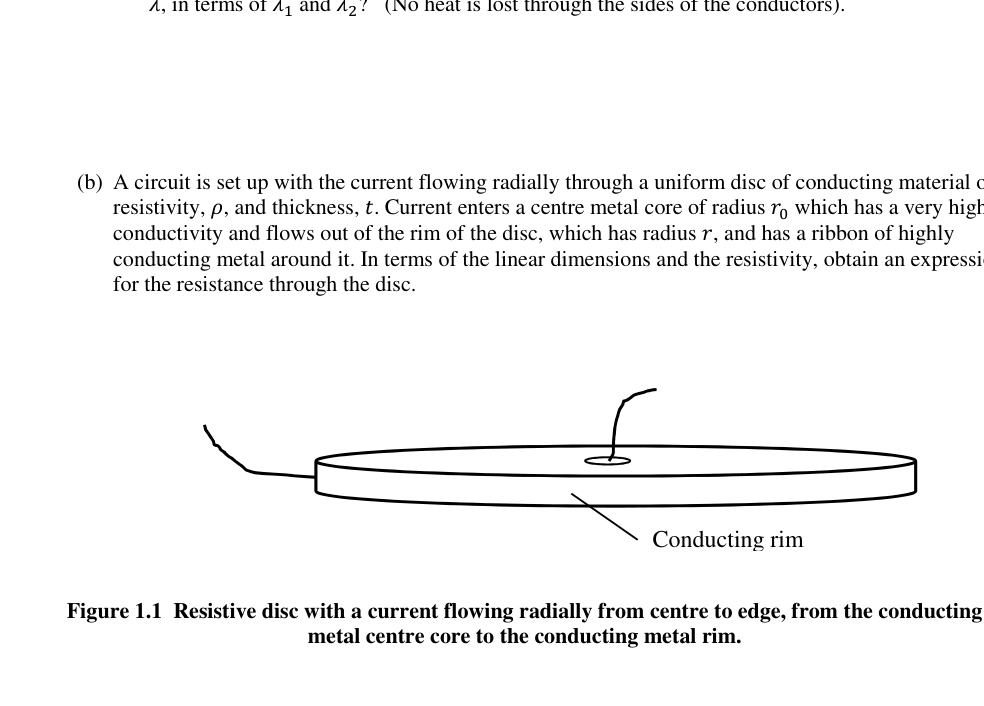
Disco resistivo con corrente radiale centro-bordo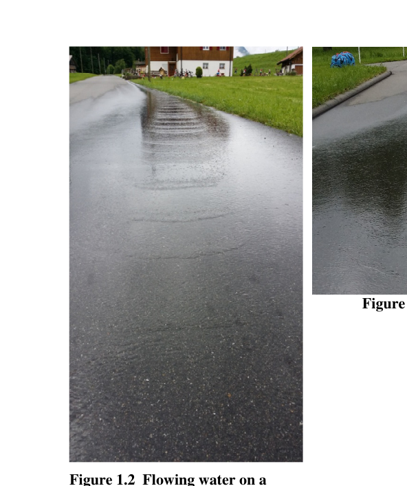
Acqua su pendio: flusso uniforme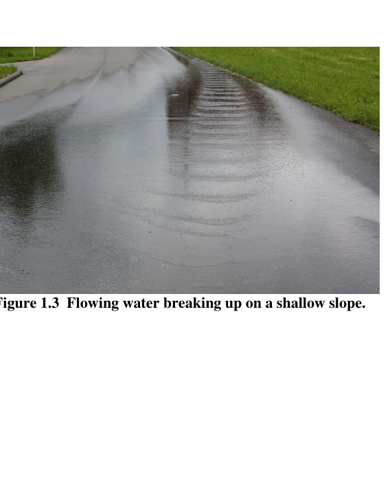
Acqua su pendio: flusso che si frammentaTopic: Thermodynamics, Circuits, Fluid Mechanics Metodi: Physical Modeling, Calculus-Integration, Equivalent Circuit Reduction Competenze: Physical Reasoning, Mathematical Modeling, Diagrammatic Reasoning Objects: Wire, Disk Fonte: Testo (PDF) — p.3
Domanda 1
(a) Il flusso di energia termica attraverso un conduttore a causa di una differenza di temperatura tra due facce è descritto con un’equazione della forma, dQ d =
in cui dQ d è la velocità di flusso di calore, è l’area trasversale del conduttore e è il gradiente di temperatura lungo la linea di flusso di calore. Le proprietà di conduzione termica del mezzo sono dati dal coefficiente di conducibilità termica, .
i) Un flusso simile attraverso un conduttore può essere attribuito alla conduzione di elettricità. Scrivi un equazione della stessa forma per la conduzione elettrica attraverso un materiale, che indica quale sia il il termine corrispondente è in ogni equazione. Commento sulla presenza del segno meno.
ii) In un esempio in cui due conduttori cilindrici di energia termica con la stessa sezione trasversale le aree e lunghezze simili sono posizionate in serie da un lato all’altro, in modo che l’energia termica fluisca attraverso ciascuna a sua volta, quale è la conducibilità termica equivalente della combinazione di conduttori di serie, , in termini di e ? (Non si perde calore attraverso i lati dei conduttori).
b) Un circuito è montato con la corrente che scorre radialmente attraverso un disco uniforme di materiale conduttore di resistenza, , e spessore, Il corrente entra in un nucleo metallico centrale di raggio che ha un elevato la conducibilità e scorre dal bordo del disco, che ha un raggio , e ha un nastro di che conduce metallo intorno. In termini di dimensioni lineari e di resistività, ottenere un’espressione per la resistenza attraverso il disco.
Figura 1.1 Disco resistente con corrente che scorre radialmente dal centro al bordo, dal conduttore nucleo centrale di metallo al bordo di metallo conduttore.
Conduzione di gomma
(c) I fisici devono spesso spiegare gli effetti osservati nella natura per i quali possono esserci una serie di contribuire a spiegare. L’osservazione è una capacità chiave del fisico, essere in grado di vedere ciò che è in e individuare le caratteristiche importanti e pertinenti.
Le figure 1.2 e 1.3 riportate di seguito mostrano l’acqua che scorre lungo una strada dalla fonte costante di un un piccolo ruscello sul bordo della strada. Il flusso liscio del ruscello si rompe più in alto sulla strada. L’acqua scorre lungo la pendice uniforme della strada verso l’osservatore. - Di’ quanto puoi. osservare le fotografie e commentarle dal punto di vista di un fisico. Non lo sei. La Commissione ha inoltre adottato una decisione che prevede che le misure di sicurezza e di sicurezza siano state adottate per il settore.
Figura 1.3 Acqua che scorre su una pendicia poco profonda.
Figura 1.2 Acqua corrente su una pendice superficiale che mostra come il flusso diventa di nuovo uniforme quando si diffonde.
Disco resistente con corrente radial centro-bordo
Acqua su pendio: flusso uniforme
Acqua su pendio: flusso che si frammenta
Topic: Thermodynamics, Circuits, Fluid Mechanics Metodi: Physical Modeling, Calculus-Integration, Equivalent Circuit Reduction Competenze: Physical Reasoning, Mathematical Modeling, Diagrammatic Reasoning Objects: Wire, Disk Fonte: Testo (PDF) — p.3
Question 2
(a) The gravitational force of attraction, , between two spherical masses and is given by
=
. Measuring G is difficult. Explain why.
(b) One of the earliest methods of measuring was devised by Henry Cavendish, and a modern version of the sort of setup he used is illustrated below.
Figure 2.1 Side-on view of apparatus for measuring G. Supporting bar with mirror attached. Two equal, spherical uranium masses hang from the beam (at different heights). The apparatus is inside a draught proof container. Two identical uranium spheres each of mass 60 g, made of depleted uranium-238, are suspended from a short, light, beam with a mirror attached. This is suspended from a thin torsion wire attached to a rigid support. The two small uranium spheres are hanging at different heights from the beam. Two massive lead balls (not shown) are placed on supports close to each of the uranium spheres, with about 1 cm separation between them. The uranium and lead spheres will not make contact when the beam is released. The lead spheres have a diameter of 7.6 cm and the length of the beam is 8.5 cm.
In Figure 2.2 the layout is now seen from above. This also shows the two large (grey) lead balls viewed from above. The pair of lead balls can be swung from position A as shown Figure 2.2, to position B as in Figure 2.3. The torsion wire supporting the mirror beam will resist twisting with a torque proportional to the angle of the twist, with the constant of proportionality being the torsion constant.
Mirror uranium balls Torsion wire
Explain how you could get the value of G from this apparatus. Your answer should contain quantitative values as well as comments about the layout of the apparatus and a procedure for determining G. Consider estimating the torsion constant of the wire and the period of oscillation.
Figure 2.2 View from above. Two lead balls are placed near the two uranium masses suspended from the bar (position A)
Figure 2.2 The two lead balls swung into position B.
(c) If one of the large balls was moved, then the force on a small ball would change. It might be expected that the force, by similarity to light would propagate at the speed of light and like light photons, would be quantised (gravitons!).
Some years ago a flashing radio wave emitting source was observed by Jocelyn Bell, a PhD student at Cambridge, later Professor Bell and Chair of the BPhO. The team leader, Professor Anthony Hewish received the Nobel Prize in Physics for this discovery of pulsars. Sometime later the mass of the star was determined (the mass is about the same as the Sun but with a diameter of about 25 km), but since the star’s surface could not be measured it was difficult to tell what exactly was happening. Binary pulsars have also been found (pulsars that rotate round a common centre of mass) and it is they that are likely to produce detectable changing gravitational fields.
Why would you think that binary pulsars might be a strong source of gravitational waves? Laser pointer U238 ball Lead ball Lead ball Mirror Laser pointer Lead ball Lead ball
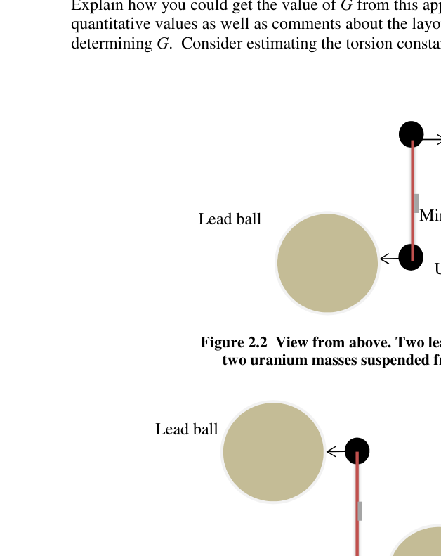
Apparato Cavendish vista laterale con specchio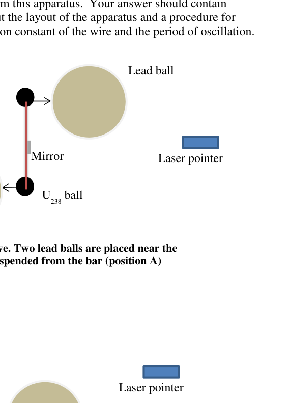
Apparato Cavendish vista dall’alto posizione A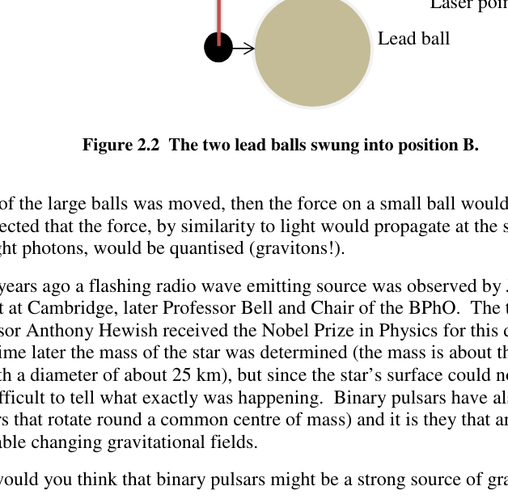
Apparato Cavendish vista dall’alto posizione BTopic: Gravitation, Oscillations & Waves, Astrophysics Metodi: Newton’s Law of Gravitation, Simple Harmonic Motion Analysis, Torque & Angular Momentum Analysis Competenze: Physical Reasoning, Mathematical Modeling, Estimation & Approximation Objects: Sphere, String, Mirror, Star Fonte: Testo (PDF) — p.6
Domanda 2
(a) La forza gravitazionale di attrazione, e è dato by
=
. Misurare G è difficile. Spiegate il motivo.
(b) Uno dei primi metodi di misurazione fu ideato da Henry Cavendish, e un moderno metodo di misurazione La versione del tipo di impostazione che ha utilizzato è illustrata qui sotto.
Figura 2.1 Vista laterale di apparecchiature di misurazione G. Barella di supporto con specchio attaccato. Due masse di uranio sferiche uguali si appoggiano al raggio (a altezze diverse). L’apparecchio è all’interno di un contenitore a prova di attrito. Due sfere identiche di uranio di massa 60 g ciascuna, realizzate in uranio impoverito-238, sono sospese da un raggio breve e chiaro con uno specchio attaccato. Questo è sospeso da un filo di torsione sottile attaccato a un supporto rigido. Le due piccole sfere di uranio appendono a altezze diverse dal raggio. Due massicce sfere di piombo (non mostrate) sono posizionate su supporti vicini a ciascuna sfera di uranio, con una distanza di circa 1 cm tra loro. L’uranio e le sfere di piombo non faranno contatto quando il raggio viene rilasciato. Le sfere di piombo hanno un diametro di 7,6 cm e la lunghezza del fascio is 8.5 cm.
Nella figura 2.2 si vede ora dal di sopra la disposizione. Questo mostra anche le due grandi (grigi) palle di piombo visto dall’alto. La coppia di palle di piombo può essere oscillata dalla posizione A come mostrato alla figura 2.2, a posizione B come nella figura 2.3. Il filo di torsione che sostiene il raggio specchio resisterà alla torsione con un Torsi proporzionali all’angolo di torsione, con la costante di proporzionalità la torsione costante.
Specchio sfere di uranio Fonte di torsione
Spiegate come si potrebbe ottenere il valore di G da questo apparecchio. La tua risposta dovrebbe contenere Valori quantitativi e osservazioni sulla disposizione dell’apparecchio e sulla procedura di che determina G. Considera di stimare la costante di torsione del filo e il periodo di oscillazione.
Figura 2.2 Vista dall’alto. Due palle di piombo sono posizionate vicino alla due masse di uranio sospese dalla barra (posizione A)
Figura 2.2 Le due palle di piombo sono state oscillate nella posizione B.
(c) Se una delle grandi palle fosse mossa, la forza su una palla piccola cambierebbe. Potrebbe si prevede che la forza, per somiglianza con la luce, si propaga alla velocità della luce e come i fotoni di luce, sarebbero quantizzati (gravitoni!).
Alcuni anni fa una fonte di emissione di onde radio lampeggianti fu osservata da Jocelyn Bell, dottoressa di ricerca studiante di Cambridge, poi professore Bell e presidente del BPhO. Il capo della squadra, Il professor Anthony Hewish ha ricevuto il Premio Nobel di Fisica per questa scoperta dei pulsar. Un po’ più tardi fu determinata la massa della stella (la massa è circa la stessa del Sole). ma con un diametro di circa 25 km), ma poiché la superficie della stella non poteva essere misurata Era difficile dire cosa stesse succedendo esattamente. Sono stati trovati anche i pulsari binari (pulsar che ruotano attorno a un comune centro di massa) e sono quelli che producono campi gravitazionali in mutazione rilevabili.
Perché pensi che i pulsari binari possano essere una forte fonte di onde gravitazionali? Punte laser U238 palla Ballone di piombo Ballone di piombo Specchio Punte laser Ballone di piombo Ballone di piombo
Apparecchiatura di vista laterale con specchio
Apparecchio Cavendish vista dall’alto posizione A
Apparecchio Cavendish vista dall’alto posizione B
Topic: Gravitation, Oscillations & Waves, Astrophysics Metodi: Newton’s Law of Gravitation, Simple Harmonic Motion Analysis, Torque & Angular Momentum Analysis Competenze: Physical Reasoning, Mathematical Modeling, Estimation & Approximation Objects: Sphere, String, Mirror, Star Fonte: Testo (PDF) — p.6
Question 3
(a) Large area optical reflecting telescope mirrors are needed if we are to see further into the universe. Greater light gathering capacity and increased resolving power do, however, mean that the mirror supporting structure must be increasingly expensive. One way to overcome this is to rotate a circular tank of clean liquid mercury at a constant rate to create the correct shape of mirror. Obtain an expression relating the angular frequency of rotation, , and the
coordinates of the mercury surface.
(b) A telescope mirror in the shape of a parabola can be specified by the equation =
. A ray parallel to the axis of the mirror is shown in Figure 3.1 below, with the normal and the reflected ray. Obtain an expression for tan 2 in terms of and . You may find useful: cos 2 = cos
and sin 2 = 2 sin cos
Figure 3.1 Parabolic mirror reflecting a paraxial beam of light. The normal to the mirror is shown.
(c) Show that the parabolic mirror will reflect all paraxial rays through a single focus, and determine the focal length of the mirror, !, in terms of .
(d) The telescope is required to have a minimum resolution of (i.e. no worse than) 40 milliarcseconds in visible light. To avoid vibrations, the rate of rotation of the mercury mirror is a slow 8.5 revolutions per minute. If the mercury was rotated in a flat bottomed circular container with the same diameter as the mirror, estimate the minimum volume of mercury used to form the mirror.
(e) Mercury evaporates from the surface, as the molecules free themselves from the bulk of the liquid. The rate at which this happens is temperature dependent, but it is about . What fraction of the mercury mirror evaporates away in a week?
(f) The telescope mirror will focus light, but even for the ideal mirror shape, the light cannot be focused to a point. Explain why. If the intensity of light reaching the telescope from a distant source is (a rather faint telescopic 13.7 magnitude star), what is an estimate of the maximum intensity of light which is obtained at the image position?
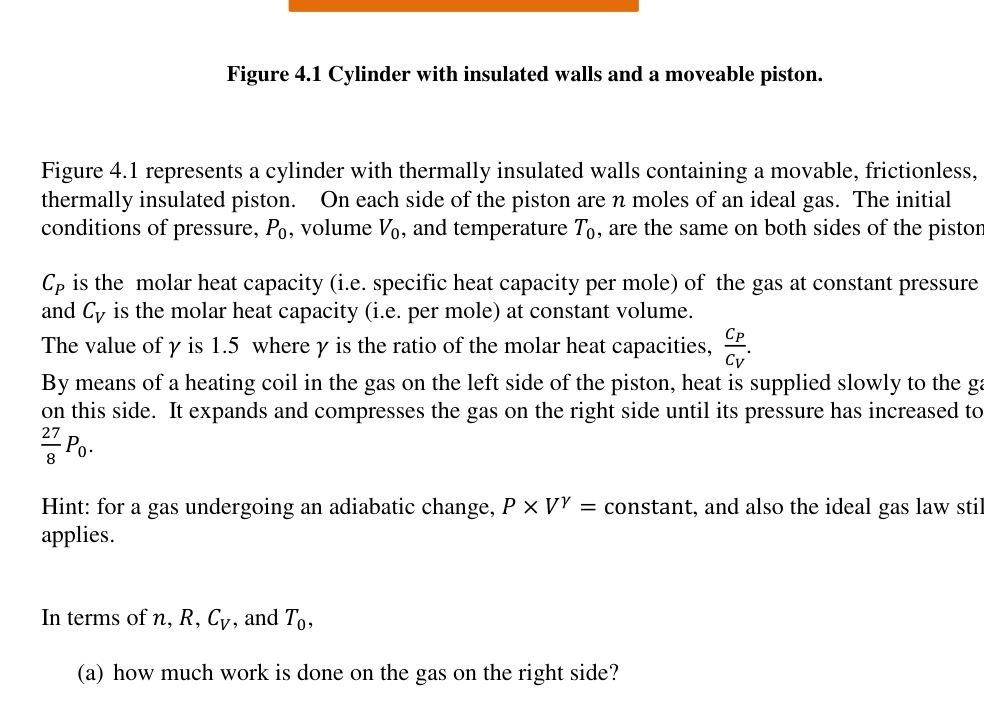
Specchio parabolico con raggio parassiale riflessoTopic: Geometric Optics, Fluid Mechanics, Kinetic Theory Metodi: Calculus-Integration, Ray Tracing, Thin Lens & Mirror Equation Competenze: Mathematical Modeling, Physical Reasoning, Estimation & Approximation Objects: Mirror, Container Fonte: Testo (PDF) — p.8
Domanda 3
(a) Per poter vedere ulteriormente il Universo. Tuttavia, una maggiore capacità di raccolta della luce e un maggiore potere di risoluzione che la struttura di supporto dello specchio deve essere sempre più costosa. Un modo per superare Questo è per ruotare un serbatoio circolare di mercurio liquido pulito a velocità costante per creare il corretto forma di specchio. Ottenere un’espressione relativa alla frequenza angolare di rotazione, e
coordinate della superficie del mercurio.
b) Un specchio telescopico a forma di parabola può essere specificato con l’equazione =
. A Il raggio parallelo all’asse dello specchio è mostrato nella figura 3.1 di seguito, con il normale e il
- Il raggio riflesso. Ottenere un’espressione per bronzare 2 in termini di e . Potresti trovarlo utile: cos 2 = cos
e peccato 2 = 2 peccati cos
Figura 3.1 Specchio parabolico che riflette un raggio di luce paraxiale. La normalità dello specchio è mostrata.
(c) Mostra che lo specchio parabolico rifletterà tutti i raggi parazziali attraverso un unico foco, e
- Determina la distanza focale dello specchio, in termini di…
d) Il telescopio deve avere una risoluzione minima di (ossia non peggiore di) 40 Miliarc secondi in luce visibile. Per evitare vibrazioni, la velocità di rotazione del mercurio lo specchio è lento, 8,5 giri al minuto. Se il mercurio fosse rotato in un fondo piatto contenitore circolare dello stesso diametro dello specchio, stima il volume minimo di il mercurio usato per formare lo specchio.
(e) Il mercurio evapora dalla superficie, poiché le molecole si liberano dalla maggior parte della superficie del liquido. La velocità con cui questo accade è temperatura dipendente, ma è circa . Quanta frazione dello specchio di mercurio evapora in una settimana?
(f) Lo specchio del telescopio focalizza la luce, ma anche per la forma ideale dello specchio, la luce non può essere concentrato su un punto. Spiegate il motivo. Se l’intensità della luce che raggiunge il telescopio da una fonte lontana è (a) la stella di magnitudo 13,7 piuttosto debole telescopica), che è una stima dell’intensità massima di luce che viene ottenuta nella posizione dell’immagine?
Specchio parabolico con raggio paracasale
Topic: Geometric Optics, Fluid Mechanics, Kinetic Theory Metodi: Calculus-Integration, Ray Tracing, Thin Lens & Mirror Equation Competenze: Mathematical Modeling, Physical Reasoning, Estimation & Approximation Objects: Mirror, Container Fonte: Testo (PDF) — p.8
Question 4
Figure 4.1 Cylinder with insulated walls and a moveable piston.
Figure 4.1 represents a cylinder with thermally insulated walls containing a movable, frictionless, thermally insulated piston. On each side of the piston are 1 moles of an ideal gas. The initial conditions of pressure, 2, volume 3, and temperature , are the same on both sides of the piston.
45 is the molar heat capacity (i.e. specific heat capacity per mole) of the gas at constant pressure and 46 is the molar heat capacity (i.e. per mole) at constant volume. The value of 7 is 1.5 where 7 is the ratio of the molar heat capacities, 89 8:. By means of a heating coil in the gas on the left side of the piston, heat is supplied slowly to the gas on this side. It expands and compresses the gas on the right side until its pressure has increased to
; < 2.
Hint: for a gas undergoing an adiabatic change, 2 3= = constant, and also the ideal gas law still applies.
In terms of 1, , 46, and ,
(a) how much work is done on the gas on the right side?
(b) what is the final temperature of the gas on the right?
(c) what is the final temperature of the gas on the left?
(d) how much heat flows into the gas on the left?
initial conditions are 2, 3, on each side of the piston Electrical supply Heater
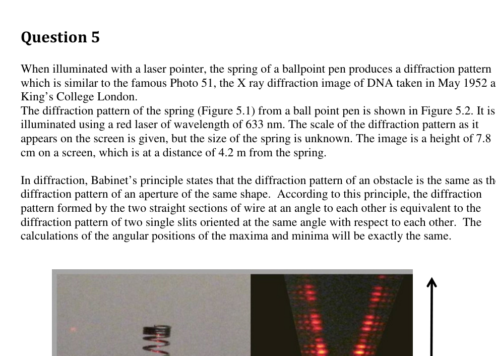
Cilindro con pistone mobile e pareti isolateTopic: Thermodynamics, Conservation of Energy Metodi: First Law of Thermodynamics, Ideal Gas Law, Thermodynamic Cycle Analysis Competenze: Mathematical Modeling, Physical Reasoning Objects: Gas, Cylinder, Piston Fonte: Testo (PDF) — p.9
Domanda 4
Figura 4.1 cilindro con pareti isolate e pistone mobile.
La figura 4.1 rappresenta un cilindro con pareti termicamente isolate contenente un cilindro mobile, senza attrito, piston termicamente isolato. Su ciascun lato del pistone ci sono 1 mole di gas ideale. La prima le condizioni di pressione, 2, volume 3, e temperatura sono le stesse su entrambi i lati del pistone.
45 è la capacità termico molare (cioè capacità termico specifica per mol) del gas a pressione costante e 46 è la capacità termico molare (cioè per mol) a volume costante. Il valore di 7 è 1,5 e 7 è il rapporto tra le capacità termiche molari, 89 8:. Con una bobina di riscaldamento nel gas sul lato sinistro del pistone, il calore viene fornito lentamente al gas
- Da questa parte. Si espandono e si comprimono il gas sul lato destro fino a quando la pressione è aumentata a
; < 2.
Suggerimento: per un gas che subisce una modifica adiabatica, 2 3= = costante, e anche la legge del gas ideale ancora applicabile.
In termini di 1, , 46 e ,
(a) quanto lavoro viene fatto sul gas sul lato destro?
b) qual è la temperatura finale del gas a destra?
(c) qual è la temperatura finale del gas sulla sinistra?
d) quanto calore scorre nel gas a sinistra?
Le condizioni iniziali sono 2, 3 su ciascuna lato del pistone Fornitura elettrica Caldaio
Cilindro con pistone mobile e isolato pareti
Topic: Thermodynamics, Conservation of Energy Metodi: First Law of Thermodynamics, Ideal Gas Law, Thermodynamic Cycle Analysis Competenze: Mathematical Modeling, Physical Reasoning Objects: Gas, Cylinder, Piston Fonte: Testo (PDF) — p.9
Question 5
When illuminated with a laser pointer, the spring of a ballpoint pen produces a diffraction pattern which is similar to the famous Photo 51, the X ray diffraction image of DNA taken in May 1952 at King’s College London. The diffraction pattern of the spring (Figure 5.1) from a ball point pen is shown in Figure 5.2. It is illuminated using a red laser of wavelength of 633 nm. The scale of the diffraction pattern as it appears on the screen is given, but the size of the spring is unknown. The image is a height of 7.8 cm on a screen, which is at a distance of 4.2 m from the spring.
In diffraction, Babinet’s principle states that the diffraction pattern of an obstacle is the same as the diffraction pattern of an aperture of the same shape. According to this principle, the diffraction pattern formed by the two straight sections of wire at an angle to each other is equivalent to the diffraction pattern of two single slits oriented at the same angle with respect to each other. The calculations of the angular positions of the maxima and minima will be exactly the same.
Image courtesy of D. Tierney and of H. Schmitzer, Xavier University in Cincinnati
Figure 5.1 Laser illuminated spring from Figure 5.2 Diffraction pattern of the spring.
a ball point pen. No scale shown. The scale of the diffraction pattern is given.
The scale of the image is shown at the side, but this is not the same scale for the spring.
7.8 cm on the screen.
(a) Using the information given about the scale of the diffraction image, estimate the pitch of the spring, the thickness of the wire of the spring, and the radius of the spring.
Figure 5.3 X ray diffraction image of DNA taken in this famous Photo 51, crucial in the elucidation of the structure of DNA. The scale of the image is shown at the side.
(b) If Photo 51 was taken with the line of copper, which has a wavelength of 0.15 nm, and the distance between the sample and the film was 9.0 cm, estimate the angle, pitch and radius of the DNA molecule. In the image, the zeroth order is not visible in the centre. The first order maximum can just be seen, but the 2nd, 3rd and 5th orders are clear. (The 4th order is missing, an effect of the double helix structure, which you can ignore).
END OF PAPER Diameter = 9.4 cm
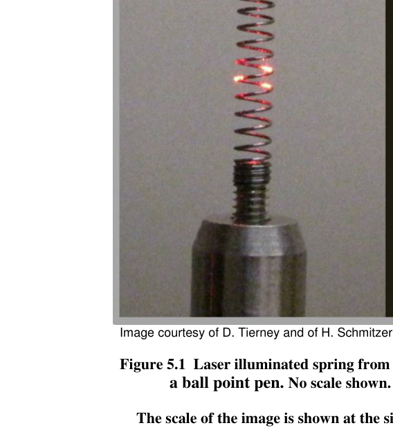
Molla di penna a sfera illuminata da laser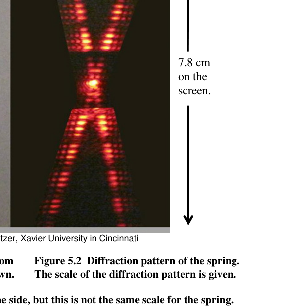
Pattern di diffrazione della molla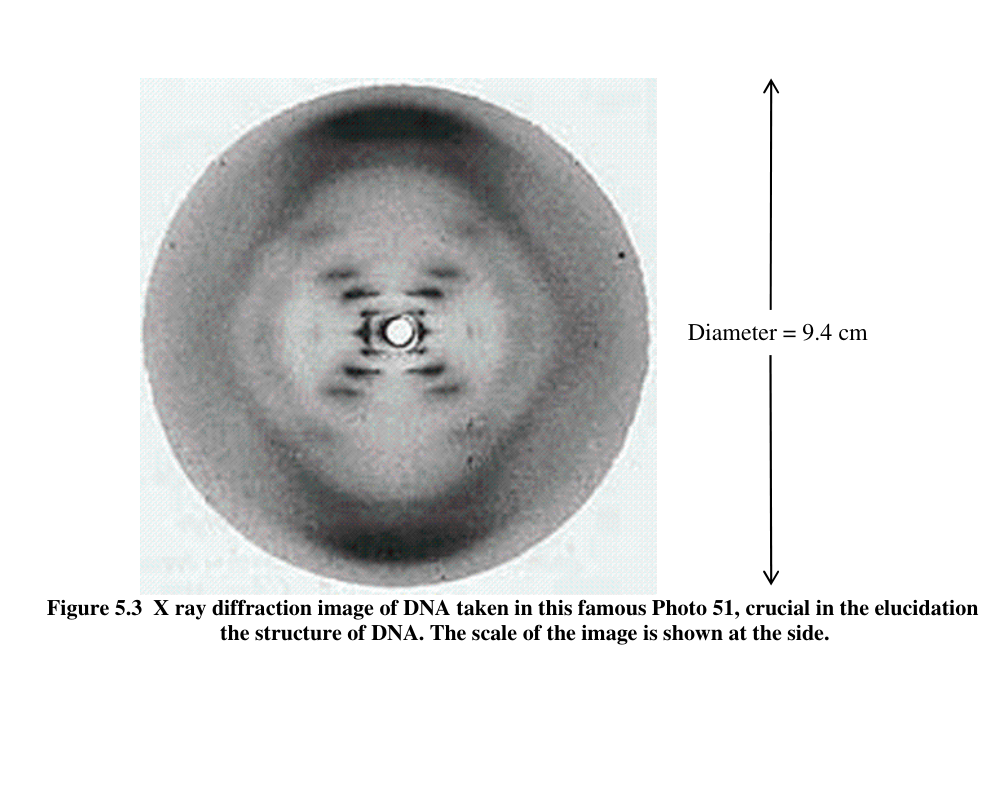
Foto 51: diffrazione X-ray del DNATopic: Wave Optics, Oscillations & Waves Metodi: Interference & Diffraction Analysis, Small-Angle Approximation, Wave Equation Competenze: Mathematical Modeling, Estimation & Approximation, Experimental Data Analysis Objects: Spring, Screen, Slit Fonte: Testo (PDF) — p.10
Domanda 5
Quando viene illuminata con un puntatore laser, la molla di una penna a sfera produce un modello di diffrazione che è simile alla famosa Foto 51, l’immagine di diffrazione a raggi X del DNA scattata nel maggio 1952 al King’s College di Londra. Il modello di diffrazione della molla (Figura 5.1) da una penna a punta di sfera è mostrato nella Figura 5.2. It is illuminati con un laser rosso di lunghezza d’onda di 633 nm. La scala del modello di diffrazione come Il numero di scarichi di questa fonte è indicato, ma la dimensione della sorgente è sconosciuta. L’immagine ha un’altezza di 7,8 cm su uno schermo, che si trova a una distanza di 4,2 m dalla sorgente.
Nel campo della diffrazione, il principio di Babinet afferma che il modello di diffrazione di un ostacolo è lo stesso di quello di un ostacolo. modello di diffrazione di un’apertura della stessa forma. Secondo questo principio, la diffrazione Il modello formato dalle due sezioni rette di filo ad angolo uno all’altro è equivalente al modello di diffrazione di due singole fessure orientate all’angolo stesso rispetto a ciascuna altra. Il i calcoli delle posizioni angolari dei massimi e dei minimi saranno esattamente gli stessi.
Immagine cortesia di D. Tierney e di H. Schmitzer, Università Xavier di Cincinnati
Figura 5.1 Primavera illuminata a laser da Figura 5.2 Modello di diffrazione della molla.
una penna a puntata. Nessuna scala mostrata. La scala del modello di diffrazione è data.
La scala dell’immagine è mostrata lateralmente, ma questa non è la stessa scala per la primavera.
7.8 cm sulla
-
La schermata.
-
utilizzando le informazioni fornite sulla scala dell’immagine di diffrazione, stimare il tono di la primavera, l’espensione del filo della primavera, e il raggio della primavera.
Figura 5.3 Immagine di diffrazione a raggi X del DNA scattata in questa famosa Foto 51, cruciale per l’illuminazione di la struttura del DNA. La scala dell’immagine è mostrata lateralmente.
b) se la foto 51 è stata scattata con la linea di rame, che ha una lunghezza d’onda di 0,15 nm, e la distanza tra il campione e il film è stata di 9,0 cm, stimare l’angolo, il tono e il raggio della molecola di DNA. Nell’immagine, l’ordine dello zero non è visibile al centro. Il Il massimo del primo ordine è visibile, ma il secondo, terzo e quinto ordine sono chiari. (Quarto ordine) manca, un effetto della struttura a doppia elica, che si può ignorare).
Fino alla fine della carta Diametro = 9,4 cm
Molla di penna a sfera illuminata da laser
Pattern di diffrazione della molla
Foto 51: diffrazione dei raggi X del DNA
Topic: Wave Optics, Oscillations & Waves Metodi: Interference & Diffraction Analysis, Small-Angle Approximation, Wave Equation Competenze: Mathematical Modeling, Estimation & Approximation, Experimental Data Analysis Objects: Spring, Screen, Slit Fonte: Testo (PDF) — p.10